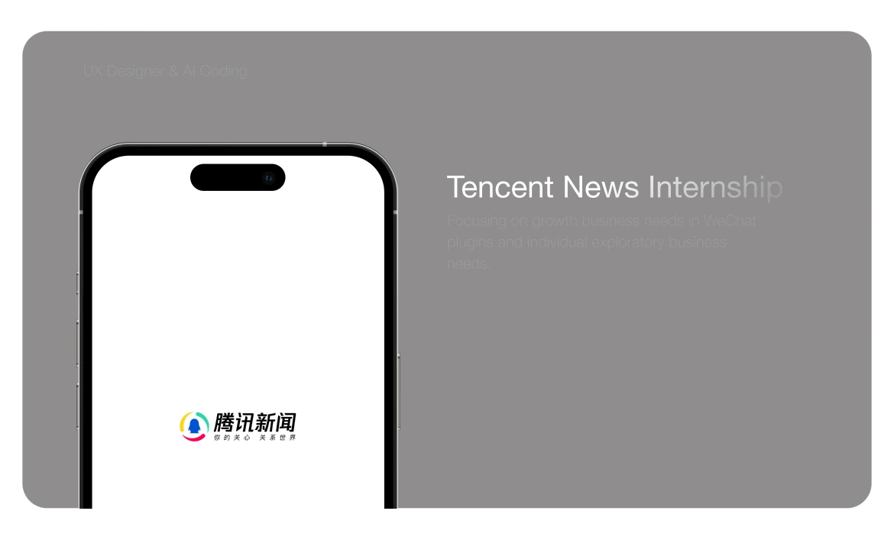
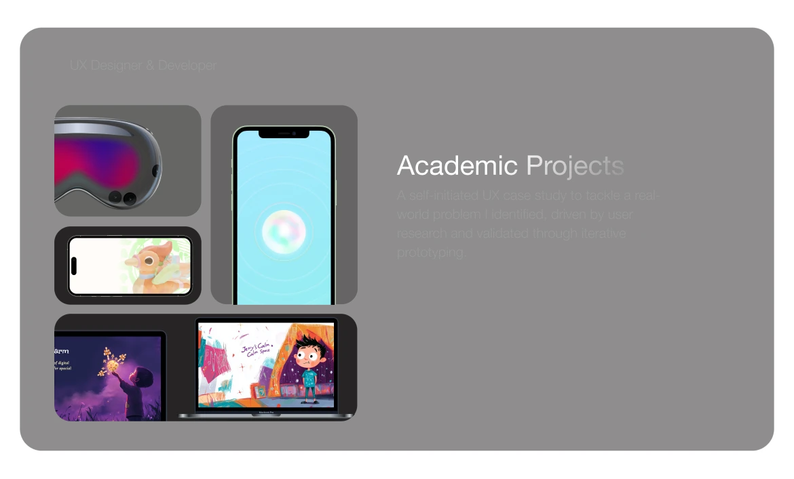
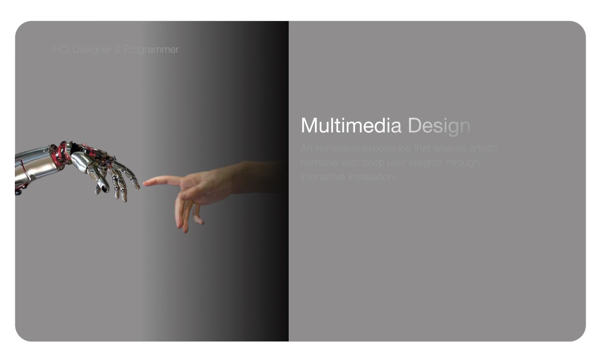
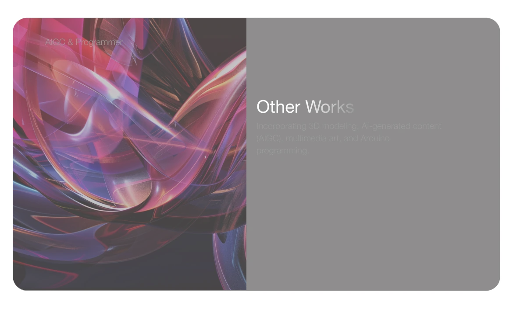

Selected Work
04 categories2023—2026

Focusing on growth business needs in WeChat plugins and individual exploratory business needs.
UX Designer & AI Coding

Independent ideas developed through user research, prototyping and iterative validation.
UX Designer & Developer

Artistic narratives and interactive installations. Exploring how people, technology and materials connect.
HCI Designer & Programmer

Explorations in AI-generated imagery, 3D modeling, multimedia art and Arduino programming.
AIGC & Programmer
正在准备字母图片…